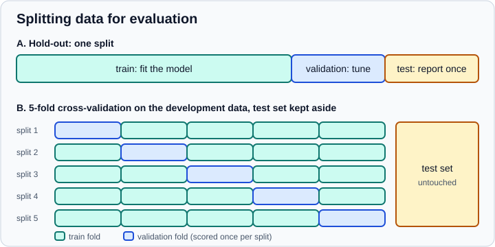
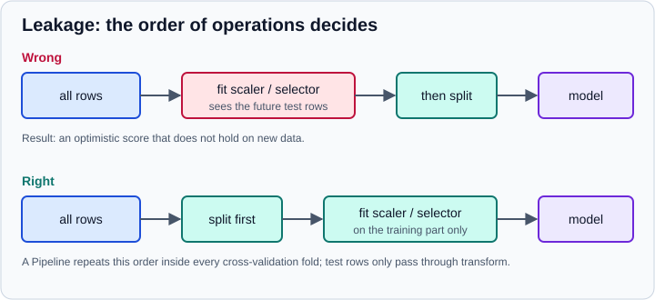

Model Evaluation & Validation
|
This content was generated with the assistance of AI and should be verified against the official documentation before being relied on in production. |
A model is only useful if it works on data it has not seen. Evaluation is the set of habits that estimate that honestly: split the data before you look at it too closely, compare against a baseline, choose metrics that match the decision the model supports, score with cross-validation instead of one lucky split, and keep every preprocessing step that learns from data inside the training part of each split.
Examples target Python 3.13 or 3.14 and were run on Python 3.13. This page targets scikit-learn 1.9 (1.9.1 was the current release when the page was checked in October 2026), NumPy 2.5 and pandas 3.1. Every example below was run on those versions. The metrics, splitters and search classes are documented one by one in the scikit-learn sub-section: Metrics & Scoring, Cross-Validation & Splitters, Grid, Randomized & Halving Search, Tuning the Decision Threshold, Probability Calibration, Validation & Learning Curves and Common Pitfalls: Leakage & Randomness. This page is the concept layer: why each step exists and how the pieces fit together. Machine Learning Fundamentals introduces overfitting and the bias-variance trade-off, and Feature Engineering covers the transformations that must be fitted inside a split.
What evaluation is for
A fitted model always scores well on the rows it was fitted on, and more flexible models score better still. That training score measures memorisation as much as learning. What you want is the generalisation error: the expected error on new rows drawn from the same process. Because new rows are not available when you decide, you simulate them by holding some data back.
Three questions need three different held-back sets:
-
Does the model learn anything at all? Compare it with a baseline on held-back data.
-
Which model or which hyperparameters are best? Compare candidates on validation data, or with cross-validation.
-
How will the chosen model perform in production? Score it once on a test set that no decision has touched.
Reusing one held-back set for questions 2 and 3 quietly turns it into training data: after enough comparisons, the winner is the candidate that happened to fit that set best, and its score is optimistic.

Splitting the data
Train/test split
train_test_split shuffles by default and returns the parts in the order X_train, X_test, y_train, y_test. Two arguments matter most. stratify=y keeps the class proportions equal in both parts, which matters for classification and essential for rare classes. random_state fixes the shuffle so the split is reproducible. The following example also builds the simplest baseline.
from sklearn.datasets import load_breast_cancer
from sklearn.dummy import DummyClassifier
from sklearn.linear_model import LogisticRegression
from sklearn.model_selection import train_test_split
from sklearn.pipeline import make_pipeline
from sklearn.preprocessing import StandardScaler
X, y = load_breast_cancer(return_X_y=True, as_frame=True)
X_train, X_test, y_train, y_test = train_test_split(
X, y, test_size=0.2, stratify=y, random_state=0
)
print(X_train.shape, X_test.shape)
print(y_train.mean().round(3), y_test.mean().round(3))
baseline = DummyClassifier(strategy="most_frequent").fit(X_train, y_train)
model = make_pipeline(StandardScaler(), LogisticRegression(max_iter=1000)).fit(X_train, y_train)
print("baseline accuracy:", round(baseline.score(X_test, y_test), 3))
print("model accuracy :", round(model.score(X_test, y_test), 3))Output:
(455, 30) (114, 30) 0.626 0.632 baseline accuracy: 0.632 model accuracy : 0.982
Source: scikit-learn: train_test_split and DummyClassifier
The stratified parts have almost the same positive rate (0.626 and 0.632). The baseline that always predicts the majority class already reaches 0.632 accuracy, so the model’s 0.982 is the number to read, not 0.982 on its own.
Train, validation and test
When you compare many candidates, split three ways or, better, use cross-validation on the development part (everything except the test set) and keep the test set for the final report. A common starting point is to put 10 to 20 percent of the rows in the test set. Small data sets make any single split noisy, so prefer cross-validation there; very large data sets can afford one validation split.
The test set is used once. If a test score disappoints and you change the model in response, the test set has become a validation set, and you need a new one (fresh data) for an honest estimate.
When a random split is wrong
A shuffled split assumes the rows are independent and identically distributed. Many real data sets break that:
-
Repeated measures. Several rows come from the same patient, customer, device or document. A random split puts some rows of an entity in training and others in test, and the model can recognise the entity instead of learning the pattern.
-
Time. When the model predicts the future, a shuffled split lets it train on days after the ones it is tested on.
-
Spatial or hierarchical structure, such as neighbouring plots or students in the same school.
The fix is to split by the unit you will meet in production: by group (GroupKFold, StratifiedGroupKFold, LeaveOneGroupOut) or by time (TimeSeriesSplit). The example fabricates a worst case. Each of 40 patients has a fingerprint-like feature vector and a label unrelated to anything measurable, so nothing can be learned about new patients.
import numpy as np
from sklearn.ensemble import RandomForestClassifier
from sklearn.model_selection import GroupKFold, KFold, TimeSeriesSplit, cross_val_score
rng = np.random.default_rng(0)
n_patients, per_patient = 40, 10
groups = np.repeat(np.arange(n_patients), per_patient)
# each patient has a fingerprint (e.g. a device or anatomy trait) and a label unrelated to it
fingerprint = rng.normal(size=(n_patients, 5))[groups]
X = fingerprint + rng.normal(scale=0.1, size=fingerprint.shape)
y = rng.integers(0, 2, size=n_patients)[groups]
model = RandomForestClassifier(n_estimators=100, random_state=0)
kfold = cross_val_score(model, X, y, cv=KFold(5, shuffle=True, random_state=0))
gkfold = cross_val_score(model, X, y, cv=GroupKFold(5), groups=groups)
print("KFold accuracy :", kfold.mean().round(3))
print("GroupKFold accuracy:", gkfold.mean().round(3), "(chance is about 0.5)")
tscv = TimeSeriesSplit(n_splits=4, gap=2)
for fold, (train, test) in enumerate(tscv.split(np.arange(30))):
print(fold, "train", train[0], "-", train[-1], "| test", test[0], "-", test[-1])Output:
KFold accuracy : 0.992 GroupKFold accuracy: 0.538 (chance is about 0.5) 0 train 0 - 3 | test 6 - 11 1 train 0 - 9 | test 12 - 17 2 train 0 - 15 | test 18 - 23 3 train 0 - 21 | test 24 - 29
The shuffled KFold reports 0.992 because the forest recognises patients; GroupKFold keeps every patient on one side and reports the truth, about chance. TimeSeriesSplit always trains on the past and tests on the future, and its gap argument leaves a buffer between the two so that autocorrelated neighbours do not straddle the boundary. The same lesson applies to any hierarchical structure.
Baselines first
A score has no meaning without a reference. Establish at least one baseline before trying a real model:
-
DummyClassifier(most_frequent,prior,stratified,uniform,constant) andDummyRegressor(mean,median,quantile,constant) predict from the targets alone. -
A simple rule a domain expert would use ("yesterday’s value", "the previous order’s category").
-
A very simple model such as regularised linear or logistic regression.
On the California housing data below, the mean baseline has an R2 of about zero by construction, which is exactly what R2 means: it measures improvement over predicting the mean.
from sklearn.datasets import fetch_california_housing
from sklearn.dummy import DummyRegressor
from sklearn.ensemble import HistGradientBoostingRegressor
from sklearn.metrics import mean_absolute_error, r2_score, root_mean_squared_error
from sklearn.model_selection import train_test_split
X, y = fetch_california_housing(return_X_y=True, as_frame=True)
X_train, X_test, y_train, y_test = train_test_split(X, y, test_size=0.2, random_state=0)
for name, est in [("mean baseline", DummyRegressor(strategy="mean")),
("HistGradientBoosting", HistGradientBoostingRegressor(random_state=0))]:
pred = est.fit(X_train, y_train).predict(X_test)
print(f"{name:22s} MAE={mean_absolute_error(y_test, pred):.3f} "
f"RMSE={root_mean_squared_error(y_test, pred):.3f} R2={r2_score(y_test, pred):.3f}")Output (the data set is downloaded the first time, and the target is in units of 100,000 US dollars):
mean baseline MAE=0.907 RMSE=1.142 R2=-0.000 HistGradientBoosting MAE=0.310 RMSE=0.461 R2=0.837
Choosing metrics
A metric turns predictions into one number, and the number defines what "better" means. Pick it from the cost of the errors, not from habit. scikit-learn exposes each metric twice: as a function (f1_score(y_true, y_pred)) and as a scoring string for cross_val_score and the search classes (scoring="f1"). Scorers follow the rule that greater is better, so error-like metrics are negated and prefixed with neg_ (neg_root_mean_squared_error, neg_log_loss, neg_brier_score).
Classification
from sklearn.datasets import load_breast_cancer
from sklearn.linear_model import LogisticRegression
from sklearn.metrics import (
ConfusionMatrixDisplay, accuracy_score, average_precision_score, balanced_accuracy_score,
brier_score_loss, classification_report, confusion_matrix, f1_score, log_loss,
matthews_corrcoef, precision_score, recall_score, roc_auc_score,
)
from sklearn.model_selection import train_test_split
from sklearn.pipeline import make_pipeline
from sklearn.preprocessing import StandardScaler
X, y = load_breast_cancer(return_X_y=True, as_frame=True)
X_train, X_test, y_train, y_test = train_test_split(X, y, test_size=0.2, stratify=y, random_state=0)
model = make_pipeline(StandardScaler(), LogisticRegression(max_iter=1000)).fit(X_train, y_train)
y_pred = model.predict(X_test)
y_proba = model.predict_proba(X_test)[:, 1]
print(confusion_matrix(y_test, y_pred))
print(classification_report(y_test, y_pred, target_names=["malignant", "benign"], digits=3))
scores = {
"accuracy": accuracy_score(y_test, y_pred),
"balanced_accuracy": balanced_accuracy_score(y_test, y_pred),
"precision": precision_score(y_test, y_pred),
"recall": recall_score(y_test, y_pred),
"f1": f1_score(y_test, y_pred),
"mcc": matthews_corrcoef(y_test, y_pred),
"roc_auc": roc_auc_score(y_test, y_proba),
"average_precision": average_precision_score(y_test, y_proba),
"log_loss": log_loss(y_test, y_proba),
"brier": brier_score_loss(y_test, y_proba),
}
for name, value in scores.items():
print(f"{name:18s}{value:.3f}")
disp = ConfusionMatrixDisplay.from_predictions(y_test, y_pred, display_labels=["malignant", "benign"])
print(type(disp).__name__)Output:
[[40 2]
[ 0 72]]
precision recall f1-score support
malignant 1.000 0.952 0.976 42
benign 0.973 1.000 0.986 72
accuracy 0.982 114
macro avg 0.986 0.976 0.981 114
weighted avg 0.983 0.982 0.982 114
accuracy 0.982
balanced_accuracy 0.976
precision 0.973
recall 1.000
f1 0.986
mcc 0.963
roc_auc 0.996
average_precision 0.997
log_loss 0.078
brier 0.023
ConfusionMatrixDisplay
The rows of the confusion matrix are the true classes and the columns the predicted classes, so [[40 2] [0 72]] reads "40 malignant found, 2 malignant called benign, 0 benign called malignant, 72 benign found". Note that the positive class here is label 1, which in this data set is benign; always check which class is positive before reading precision and recall. Use pos_label to change it.
The metrics answer different questions:
| Metric | Question it answers | Watch out for |
|---|---|---|
Accuracy |
What share of predictions is right? |
Misleading when one class dominates; a model that always predicts the majority class scores 0.965 on data with 3.5 percent positives. |
Precision |
Of the cases flagged positive, how many are truly positive? |
Ignores the positives that were missed. Choose it when false alarms are costly. |
Recall (sensitivity) |
Of the truly positive cases, how many were found? |
Ignores false alarms. Choose it when a miss is costly (screening, fraud, safety). |
F1 |
The harmonic mean of precision and recall at one threshold. |
Ignores true negatives and weights precision and recall equally; |
Balanced accuracy |
The mean of per-class recall. |
Treats each class as equally important, which may not match the costs. |
Matthews correlation coefficient |
A single correlation-like score using all four cells of the confusion matrix. |
Less familiar to stakeholders. |
ROC AUC |
The probability that a random positive is scored above a random negative; threshold free. |
Can look flattering under heavy imbalance because true negatives dominate the false-positive rate. |
Average precision (PR AUC) |
Area summary of the precision-recall curve; threshold free. |
Its baseline is the positive rate, not 0.5, so compare it with that. |
Log loss and Brier score |
How good the predicted probabilities are, penalising confident mistakes. |
They need probabilities, not labels, and say nothing about thresholds. |
For more than two classes, average="macro" gives every class equal weight, "weighted" weights by support and "micro" pools all decisions; state which one you report. For multi-label problems use average="samples" as appropriate.
Regression
-
MAE (
mean_absolute_error) is the typical absolute error in the unit of the target and is robust to outliers. -
RMSE (
root_mean_squared_error) penalises large errors more. The oldmean_squared_error(squared=False)argument no longer exists in scikit-learn 1.9: callroot_mean_squared_erroror use the scoring stringneg_root_mean_squared_error. -
R2 (
r2_score) is one minus the ratio of the model’s squared error to the baseline’s. It is 0 for the mean baseline and can be negative for a model worse than the mean. It does not tell you whether the error is acceptable in practice. -
For skewed targets such as prices, errors on the log scale (
neg_mean_squared_log_error,neg_root_mean_squared_log_error) or percentage errors (mean_absolute_percentage_error) match the decision better than raw errors, but need non-negative targets.
Always plot residuals against predictions and against important features: an average error hides regions where the model is systematically wrong.
Cross-validation
A single split throws away information: the estimate depends on which rows happened to land in the test part. K-fold cross-validation divides the development data into k folds, trains on k - 1 of them, scores on the remaining one and rotates, so every row is scored exactly once by a model that did not see it. The mean is a steadier estimate and the spread shows how much it varies.
from sklearn.datasets import load_breast_cancer
from sklearn.linear_model import LogisticRegression
from sklearn.model_selection import RepeatedStratifiedKFold, StratifiedKFold, cross_val_score, cross_validate
from sklearn.pipeline import make_pipeline
from sklearn.preprocessing import StandardScaler
X, y = load_breast_cancer(return_X_y=True, as_frame=True)
model = make_pipeline(StandardScaler(), LogisticRegression(max_iter=1000))
cv = StratifiedKFold(n_splits=5, shuffle=True, random_state=0)
scores = cross_val_score(model, X, y, cv=cv, scoring="roc_auc")
print(scores.round(3), f"mean={scores.mean():.3f} std={scores.std():.3f}")
result = cross_validate(
model, X, y, cv=cv,
scoring=["accuracy", "precision", "recall", "roc_auc"],
return_train_score=True,
)
for key in ("fit_time", "test_accuracy", "train_accuracy", "test_recall", "test_roc_auc"):
print(f"{key:15s}{result[key].mean():.3f}")
rcv = RepeatedStratifiedKFold(n_splits=5, n_repeats=10, random_state=0)
rs = cross_val_score(model, X, y, cv=rcv, scoring="roc_auc")
print(len(rs), f"repeated mean={rs.mean():.4f} std={rs.std():.4f}")Output:
[0.985 0.999 0.998 1. 0.996] mean=0.995 std=0.006 fit_time 0.002 test_accuracy 0.979 train_accuracy 0.988 test_recall 0.992 test_roc_auc 0.995 50 repeated mean=0.9947 std=0.0056
Points to remember:
-
The default is
cv=5; for classifiers an integercvmeans stratified folds, for regressors plain folds. Passing a splitter object makes the choice explicit and lets you setshuffleandrandom_state. -
shuffle=Trueis required when the file is ordered (by class, by date, by source).random_statehas no effect withoutshuffle=True, and scikit-learn raises an error if you set it anyway (since 0.24). -
cross_validateaccepts several metrics and returns fit and score times;return_train_score=Trueexposes the gap between training and validation scores, which is a quick overfitting signal. Training scores cost extra time, so leave them off for large searches. -
cross_val_predictreturns out-of-fold predictions for diagnostic plots and confusion matrices. Do not compute a single metric from them and report it as the cross-validation score: folds can differ in distribution, so average per-fold scores instead. -
Choose the splitter for the data:
StratifiedKFoldfor classification,GroupKFoldorStratifiedGroupKFoldfor grouped rows,TimeSeriesSplitfor ordered data,RepeatedStratifiedKFoldto reduce the variance of the estimate,LeaveOneOutonly for tiny data sets (its estimates are high variance and expensive). -
Report the mean with the spread. Fold scores are not independent (the training sets overlap), so the standard deviation across folds understates the true uncertainty; treat differences smaller than it as noise.
Tuning without fooling yourself
Hyperparameter search (GridSearchCV, RandomizedSearchCV, HalvingGridSearchCV) scores every candidate with cross-validation and refits the best one on all the development data. The reported best_score_ is the maximum of many noisy scores and so is biased upwards. To estimate how the whole procedure, search included, will do on new data, wrap the search in an outer cross-validation: nested cross-validation.
from sklearn.datasets import load_breast_cancer
from sklearn.ensemble import RandomForestClassifier
from sklearn.model_selection import GridSearchCV, StratifiedKFold, cross_val_score
X, y = load_breast_cancer(return_X_y=True)
param_grid = {"max_depth": [2, 4, None], "min_samples_leaf": [1, 5]}
inner = StratifiedKFold(5, shuffle=True, random_state=1)
outer = StratifiedKFold(5, shuffle=True, random_state=2)
search = GridSearchCV(RandomForestClassifier(n_estimators=100, random_state=0),
param_grid, cv=inner, scoring="roc_auc", n_jobs=-1)
search.fit(X, y)
print("best params:", search.best_params_)
print("inner best score (optimistic): %.4f" % search.best_score_)
nested = cross_val_score(search, X, y, cv=outer, scoring="roc_auc")
print("nested CV estimate: %.4f +- %.4f" % (nested.mean(), nested.std()))Output:
best params: {'max_depth': 4, 'min_samples_leaf': 1}
inner best score (optimistic): 0.9902
nested CV estimate: 0.9900 +- 0.0087
Source: scikit-learn example: nested versus non-nested cross-validation and tuning the hyper-parameters of an estimator
On this easy data set the two numbers agree to two decimals; the gap grows with the number of candidates, small samples and noisy targets. Nested cross-validation costs (outer folds) times (inner folds) times (candidates) fits, so use it to report an honest estimate, not for every experiment. The model you deploy is the search refitted on all the development data.
The same rule applies to any decision made with a score: choosing features, a threshold, an ensemble weight, an early-stopping round. If a score helped decide, it is no longer an unbiased estimate.
Class imbalance and decision thresholds
When one class is rare (fraud, failures, disease) accuracy is nearly meaningless and most models predict the common class unless pushed. The options, roughly from cheapest to most invasive:
-
Keep the data as it is and choose threshold-free metrics (average precision, ROC AUC) to compare models.
-
Choose the operating point deliberately: classifiers output scores and
predictapplies a default threshold of 0.5 (decision_function > 0for margin-based models).TunedThresholdClassifierCV(since scikit-learn 1.5) selects the threshold that maximises a metric using cross-validation, andFixedThresholdClassifierfixes it by hand. -
Reweight errors with
class_weight="balanced"(orsample_weight). This usually raises recall at the expense of precision. -
Resample (over- or under-sample) with a library such as imbalanced-learn, inside the cross-validation pipeline and only on training folds. Resampling the whole data set before splitting duplicates rows across folds and leaks them.
import numpy as np
from sklearn.datasets import make_classification
from sklearn.dummy import DummyClassifier
from sklearn.linear_model import LogisticRegression
from sklearn.metrics import balanced_accuracy_score, f1_score, recall_score, average_precision_score
from sklearn.model_selection import TunedThresholdClassifierCV, train_test_split
X, y = make_classification(n_samples=20000, weights=[0.97], flip_y=0.01, class_sep=1.0, random_state=0)
X_train, X_test, y_train, y_test = train_test_split(X, y, stratify=y, random_state=0)
print("positive rate:", y.mean().round(3))
majority = DummyClassifier(strategy="most_frequent").fit(X_train, y_train)
print("majority accuracy:", round(majority.score(X_test, y_test), 3), "recall:", recall_score(y_test, majority.predict(X_test)))
plain = LogisticRegression().fit(X_train, y_train)
balanced = LogisticRegression(class_weight="balanced").fit(X_train, y_train)
tuned = TunedThresholdClassifierCV(LogisticRegression(), scoring="f1", cv=5).fit(X_train, y_train)
print("tuned threshold:", round(float(tuned.best_threshold_), 3))
for name, m in [("default 0.5", plain), ("class_weight=balanced", balanced), ("tuned for F1", tuned)]:
p = m.predict(X_test)
print(f"{name:22s} F1={f1_score(y_test, p):.3f} recall={recall_score(y_test, p):.3f} bal.acc={balanced_accuracy_score(y_test, p):.3f}")
print("PR AUC (threshold free):", round(average_precision_score(y_test, plain.predict_proba(X_test)[:, 1]), 3))Output:
positive rate: 0.035 majority accuracy: 0.965 recall: 0.0 tuned threshold: 0.22 default 0.5 F1=0.411 recall=0.264 bal.acc=0.632 class_weight=balanced F1=0.211 recall=0.805 bal.acc=0.797 tuned for F1 F1=0.509 recall=0.471 bal.acc=0.729 PR AUC (threshold free): 0.516
Same model family, three operating points. Doing nothing finds a quarter of the positives; balancing finds 80 percent but at a very low F1 because of false alarms; the tuned threshold maximises F1. None of them is "right": the right choice depends on what a missed positive costs compared with a false alarm, which is a business decision. The majority-class model shows why accuracy fails here: 0.965 with zero recall. Resampling and class weights change the predicted probabilities, so recalibrate them if you need probabilities (next section).
Probability calibration
A classifier is calibrated if, among cases given a probability of 0.8, about 80 percent are positive. Many models are not: naive Bayes pushes probabilities to the extremes, boosted trees and SVMs distort them, and class_weight shifts them. Ranking metrics such as ROC AUC cannot see this, so check calibration whenever the probability itself drives a decision (expected loss, pricing, risk bands).
from sklearn.calibration import CalibratedClassifierCV, calibration_curve
from sklearn.datasets import make_classification
from sklearn.metrics import brier_score_loss
from sklearn.model_selection import train_test_split
from sklearn.naive_bayes import GaussianNB
X, y = make_classification(n_samples=20000, n_features=20, n_informative=2, n_redundant=10, random_state=0)
X_train, X_test, y_train, y_test = train_test_split(X, y, test_size=0.5, random_state=0)
raw = GaussianNB().fit(X_train, y_train)
cal = CalibratedClassifierCV(GaussianNB(), method="isotonic", cv=5).fit(X_train, y_train)
for name, m in [("GaussianNB", raw), ("isotonic calibrated", cal)]:
proba = m.predict_proba(X_test)[:, 1]
frac_pos, mean_pred = calibration_curve(y_test, proba, n_bins=5, strategy="quantile")
print(f"{name:20s} Brier={brier_score_loss(y_test, proba):.4f}")
print(" mean predicted:", mean_pred.round(2))
print(" observed freq :", frac_pos.round(2))Output:
GaussianNB Brier=0.1375 mean predicted: [0. 0. 0.3 0.98 1. ] observed freq : [0.02 0.21 0.44 0.83 0.99] isotonic calibrated Brier=0.1102 mean predicted: [0.02 0.23 0.47 0.83 0.99] observed freq : [0.02 0.22 0.45 0.83 0.99]
For a perfectly calibrated model the two arrays match. The raw naive Bayes model predicts almost 0 for a bin where 21 percent are positive; after isotonic calibration the pairs agree and the Brier score drops from 0.1375 to 0.1102. CalibratedClassifierCV supports method="sigmoid" (Platt scaling, good for small samples and sigmoid-shaped distortion), "isotonic" (flexible but prone to overfit with fewer than about a thousand calibration samples) and, since scikit-learn 1.8, "temperature". It fits the calibrator on held-out folds, so never calibrate on the data the model was trained on. To calibrate an already-fitted model, wrap it in FrozenEstimator: CalibratedClassifierCV(FrozenEstimator(clf)) replaces the cv="prefit" argument that was removed after scikit-learn 1.6, and the calibration data must again be separate from the training data.
Data leakage
Leakage is information from outside the training data reaching the model during training, so that validation scores are better than anything you will see in production. It is the most common cause of a model that "worked in the notebook". Typical sources:
-
Fitting a scaler, imputer, encoder, feature selector or dimensionality reduction on all the data before splitting.
-
Target leakage: a feature that is only known after the outcome (a "refund issued" flag when predicting churn, a discharge code when predicting diagnosis), or a proxy of the label.
-
Duplicates and near-duplicates across the split, including rows duplicated by oversampling before splitting.
-
Group and time leakage, as shown above.
-
Peeking: repeated test-set evaluation, or choosing features by looking at the test set.

The classic demonstration uses pure noise, where any score above chance is leakage.
import numpy as np
from sklearn.feature_selection import SelectKBest, f_classif
from sklearn.linear_model import LogisticRegression
from sklearn.model_selection import cross_val_score
from sklearn.pipeline import make_pipeline
rng = np.random.default_rng(0)
X = rng.normal(size=(100, 5000)) # pure noise
y = rng.integers(0, 2, size=100) # labels unrelated to X
# wrong: select the 20 "best" features on ALL the data, then cross-validate
X_sel = SelectKBest(f_classif, k=20).fit_transform(X, y)
wrong = cross_val_score(LogisticRegression(), X_sel, y, cv=5)
# right: selection happens inside each training fold
pipe = make_pipeline(SelectKBest(f_classif, k=20), LogisticRegression())
right = cross_val_score(pipe, X, y, cv=5)
print("leaky accuracy :", wrong.mean().round(3))
print("pipeline accuracy:", right.mean().round(3), "(chance is 0.5)")Output:
leaky accuracy : 0.85 pipeline accuracy: 0.48 (chance is 0.5)
Selecting features with the labels on all the data makes noise look 85 percent predictable. The pipeline version, where the selector is refitted on each training fold, scores about 0.5, which is the truth. The rules that prevent most leakage:
-
Split first. Fit every learned preprocessing step on the training part only and apply it to the test part with
transform. -
Put preprocessing and model in one
Pipeline(orColumnTransformerinside one) and pass the pipeline, not pre-transformed arrays, tocross_val_scoreand the search classes. See Pipelines. -
Beware estimators with built-in cross fitting:
TargetEncoder.fit_transformuses internal cross fitting to avoid leakage, whilefit(X, y).transform(X)on the same data does not give the same values. -
Review every feature for availability at prediction time.
-
Make the split by group or time when rows are not independent.
-
Be suspicious of surprisingly good results: a score far above what experts achieve is more likely to be leakage than a breakthrough.
Randomness is the other pitfall named by the same scikit-learn page: set random_state on splitters and estimators, and prefer an integer to a shared RandomState instance when you want cross-validation to be repeatable. See Reproducibility & MLOps Basics.
Diagnosing under- and overfitting
Compare training and validation scores as a function of two things.
Training set size (learning curve). If both curves are low and close, the model is too simple or the features are weak: more data will not help, more capacity or better features will. If training is high and validation is much lower, the model overfits: more data, regularisation or a simpler model should help.
Model complexity (validation curve). Training score rises with complexity; validation score rises, peaks and falls. The peak is the best compromise, and the widening gap beyond it is overfitting.
import numpy as np
from sklearn.datasets import load_digits
from sklearn.model_selection import learning_curve, validation_curve
from sklearn.svm import SVC
X, y = load_digits(return_X_y=True)
sizes, train, val = learning_curve(SVC(gamma=0.001), X, y, cv=5, train_sizes=np.linspace(0.1, 1.0, 5), random_state=0, shuffle=True)
for s, t, v in zip(sizes, train.mean(axis=1), val.mean(axis=1)):
print(f"n={s:4d} train={t:.3f} validation={v:.3f}")
gammas = np.logspace(-6, -1, 6)
train, val = validation_curve(SVC(), X, y, param_name="gamma", param_range=gammas, cv=5)
for g, t, v in zip(gammas, train.mean(axis=1), val.mean(axis=1)):
print(f"gamma={g:8.6f} train={t:.3f} validation={v:.3f}")Output:
n= 143 train=1.000 validation=0.889 n= 467 train=1.000 validation=0.955 n= 790 train=1.000 validation=0.960 n=1113 train=1.000 validation=0.963 n=1437 train=0.999 validation=0.972 gamma=0.000001 train=0.157 validation=0.158 gamma=0.000010 train=0.920 validation=0.885 gamma=0.000100 train=0.982 validation=0.947 gamma=0.001000 train=0.999 validation=0.972 gamma=0.010000 train=1.000 validation=0.696 gamma=0.100000 train=1.000 validation=0.103
The learning curve shows validation improving with more data while training stays near 1.0, so more data still helps. The validation curve is the textbook shape: tiny gamma underfits (both scores about 0.16), gamma=0.001 is the peak (0.972), and larger values memorise the training set (1.000) while validation collapses to 0.103. LearningCurveDisplay and ValidationCurveDisplay draw these curves.
How certain is the number?
A test score is an estimate from a finite sample and carries uncertainty. With 171 test rows, one more error moves accuracy by about half a percentage point. Useful ways to express it:
-
The mean and spread across (repeated) cross-validation folds.
-
A bootstrap interval for a fixed test set: resample the test predictions with replacement, recompute the metric, and take percentiles.
import numpy as np
from sklearn.datasets import load_breast_cancer
from sklearn.linear_model import LogisticRegression
from sklearn.metrics import roc_auc_score
from sklearn.model_selection import train_test_split
from sklearn.pipeline import make_pipeline
from sklearn.preprocessing import StandardScaler
X, y = load_breast_cancer(return_X_y=True)
X_train, X_test, y_train, y_test = train_test_split(X, y, test_size=0.3, stratify=y, random_state=0)
model = make_pipeline(StandardScaler(), LogisticRegression(max_iter=1000)).fit(X_train, y_train)
proba = model.predict_proba(X_test)[:, 1]
rng = np.random.default_rng(42)
aucs = []
for _ in range(2000):
idx = rng.integers(0, len(y_test), len(y_test))
if len(np.unique(y_test[idx])) < 2:
continue
aucs.append(roc_auc_score(y_test[idx], proba[idx]))
low, high = np.percentile(aucs, [2.5, 97.5])
print(f"test AUC={roc_auc_score(y_test, proba):.3f}, 95% bootstrap interval [{low:.3f}, {high:.3f}], n_test={len(y_test)}")Output:
test AUC=0.996, 95% bootstrap interval [0.989, 1.000], n_test=171
Source: NumPy: Generator.integers and roc_auc_score. The bootstrap idea is explained in Statistics Fundamentals.
When two models differ by less than this interval, the data cannot tell them apart: prefer the simpler, cheaper or more interpretable one. Compare models on the same folds (the same splitter with a fixed random_state) so that differences are not caused by different splits.
Evaluating beyond a single number
-
Slice the evaluation: report the metric per subgroup (region, device, customer segment, protected attribute). An average can hide a subgroup the model fails. See Ethics, Privacy & Responsible Data Use for fairness metrics.
-
Check calibration, residuals, and the most confident mistakes by reading examples.
-
Evaluate the whole pipeline, including data loading and preprocessing, the way it will run in production.
-
Plan for drift: the score measured on historical data is the best case; production data shifts. Monitoring is covered in Drift and Regression Monitoring and the basics in Reproducibility & MLOps Basics.
-
Translate the metric into the unit of the decision: expected cost, saved hours, missed cases per thousand.
Where older books and tutorials are outdated
Material written for scikit-learn 0.18 to 0.22 still turns up in search results. These statements are no longer true on scikit-learn 1.9.
| Older statement | Current behaviour | Changed in |
|---|---|---|
|
The modules were removed; import from |
0.20 |
|
Splitters take |
0.18 (old API removed in 0.20) |
The default |
The default is 5. |
0.22 |
|
Raises an error: set |
0.24 |
|
The argument is gone; use |
|
|
Removed; use |
Removed in 1.2 |
|
Use |
1.6 |
Scale or select features on the whole data set, then cross-validate |
Leaks test information; use a |
Always wrong; made visible by the common pitfalls guide |
Pick the threshold by hand at 0.5, or by eye on the test set |
|
1.5 |
|
Use |
Removed in 0.23 |
Evaluation checklist
-
State the decision and the metric that reflects its costs before modelling.
-
Hold out a test set first, split by group or time if rows are not independent, and do not look at it until the end.
-
Build baselines.
-
Put all learned preprocessing in a pipeline; cross-validate the pipeline.
-
Compare models on the same folds; report mean and spread.
-
Tune with an inner loop; estimate with an outer loop or a test set.
-
Choose the operating threshold deliberately and check calibration if you use probabilities.
-
Evaluate on subgroups and read the errors.
-
Record the data version, code version, seeds and library versions with every reported number.
References
-
scikit-learn user guide: Cross-validation: evaluating estimator performance
-
scikit-learn user guide: Metrics and scoring: quantifying the quality of predictions
-
scikit-learn user guide: Tuning the hyper-parameters of an estimator
-
scikit-learn user guide: Tuning the decision threshold of class prediction
-
scikit-learn user guide: Validation curves and learning curves